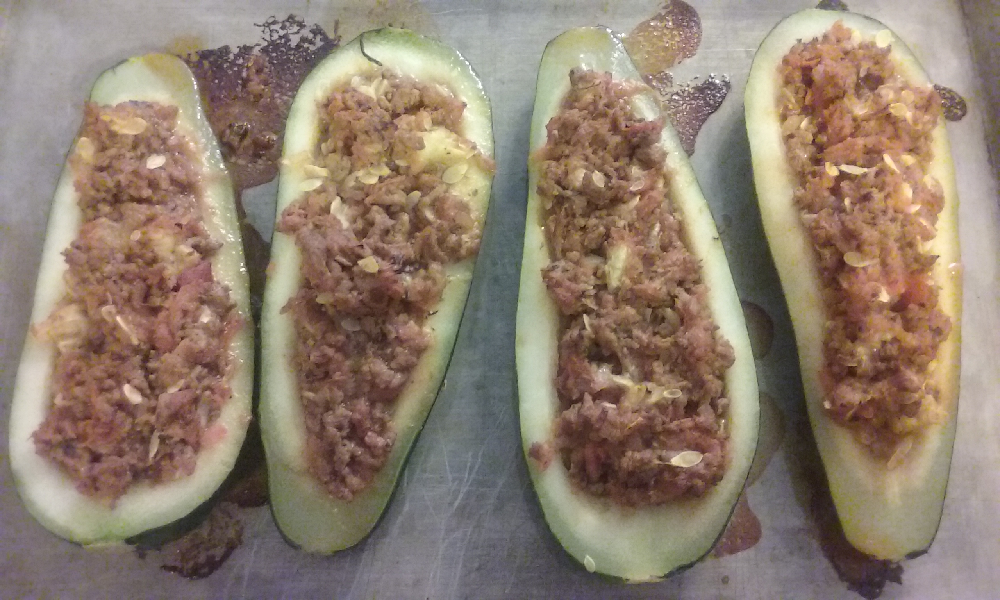

Zucchini Boats
With the onset of summer comes a plethra of zucchinis. This is a delicious and filling way to use some of the beautiful zucchini from your backyard garden or the local farmer's market.
INGREDIENTS
- 2 large zucchini
- 1/2 lb ground turkey
- 1 carrot, grated
- 1 onion, finely chopped
- 1 c. dairy free pasta sauce
- oregano, basil, garlic powder, salt and pepper to taste
DIRECTIONS
- Boil zucchini in large pot of water until tender, about 20 minutes. Check frequently for softness.
- In frying pan, saute onion, carrot, turkey and seasonings until done. Remove from heat. Add pasta sauce and mix together.
- When zucchini is done, drain and run under cool water. Cut in half, and remove the middles of the zucchini. Place on cutting board and chop into small pieces, then add to the bowl, mixing into the turkey sauce mixture.
- Place zucchini cut side up on greased baking sheet. Fill with turkey mixture. Bake at 350 F for 30 minutes.